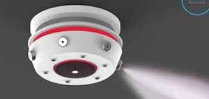

Automated cleaning devices can help from now to the long term, it can help maintain the house when the kids drag in mud after playing in the rain, or even clean up after you've had a long day and just want to lay down and sleep.
Automatic dishwasher and wedge
With an automatic dishwasher your kids and yourself will never have to worry about dirty dishes again
Robot mice
A sleek and nimble design, not even noticable and you'll wake up to a clean and spotless house
Incinerator
An incinerator can safely get rid of trash and waste without adding onto the wastelands in the garbage piles
Copper scrap rats
When trash is too heavy or there is too much for both hands, the scrap rats will take care of it for you
Safety
You must do whatever you need to make sure the ones you love are safe and why wouldn't you want your house to ensure that they will be safe?
Fire alarms
If you and your whole family is asleep why wouldn't you want to be notified if your house caught on fire?
Sprinklers
If you are rushing your loved ones out the fire how would you even think about trying to put out fire? So water sprinklers putting out the fire for you and your family to escape could save you and your family

Water rats
Fire proof and small, these small water rats can put away a massive fire within seconds with their built in water systems
Robot snakes
Equipped with green venom that can put out any fire out in seconds, and paired with the water rats, will always be sure to put out any fire in your house